S01 · 系统的能力全景
人打开 KERT 的 API 控制台，先看见"这个系统能做什么"。
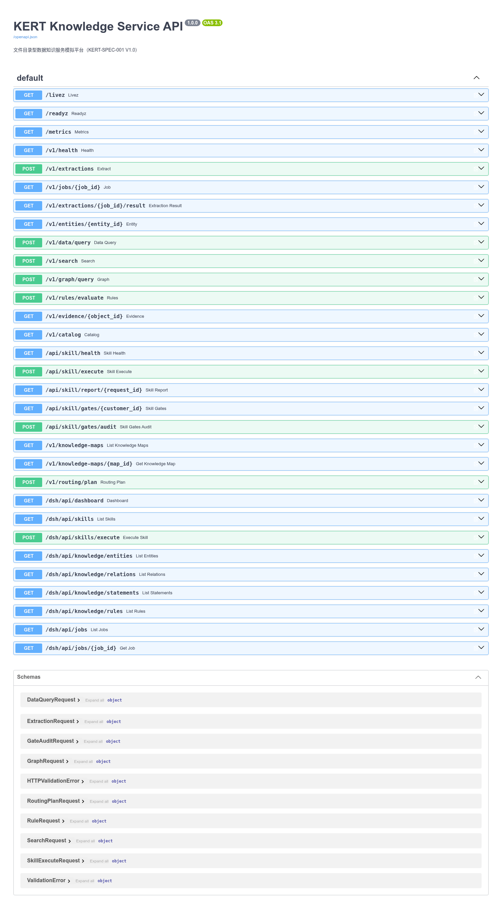
S02 · 知识地图
人先问：这类任务该按哪张地图走？
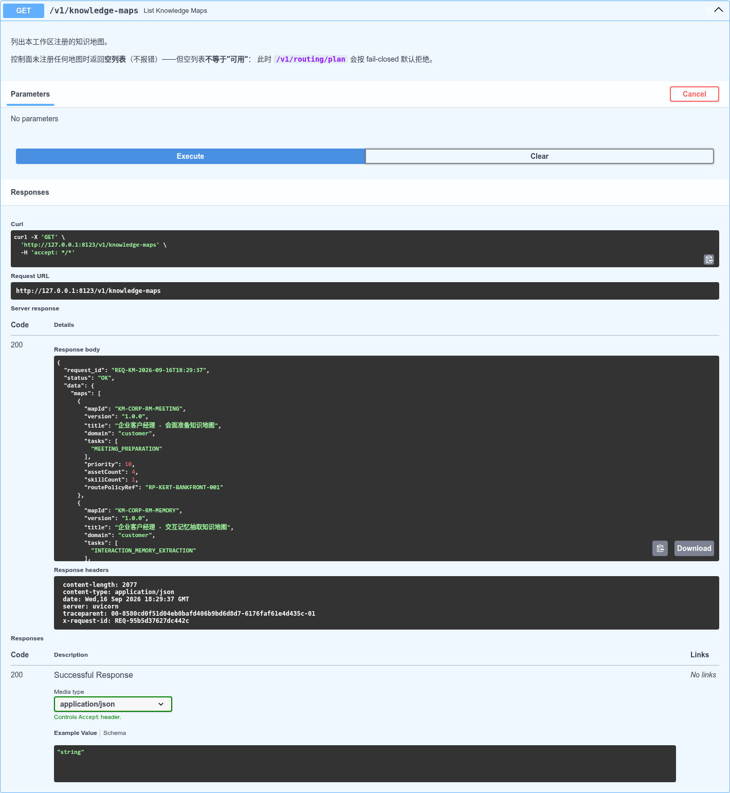
KM-CORP-RM-OUTREACH / MEETING / PREVISIT（企业客户经理 · 外联/会面/访前）。S03 · 技能路由与计划放行（含本体版本）
人问"外联准备该走什么"，系统给出放行的计划与依据，而不是一个裸答案。
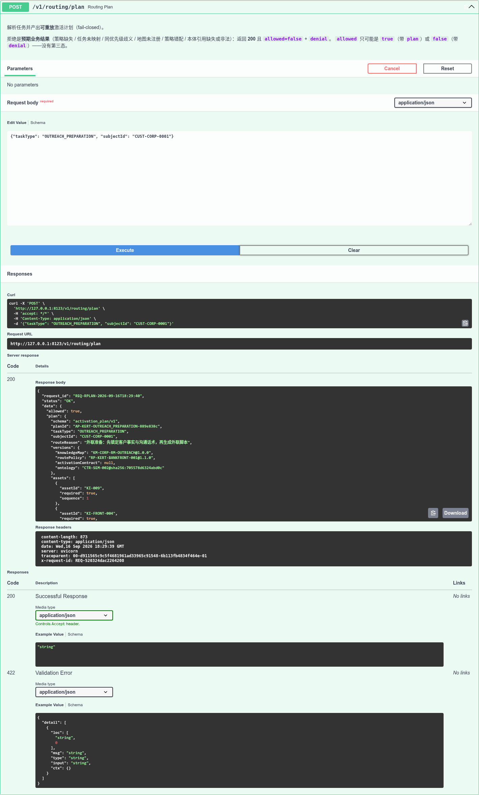
allowed=true；planId=AP-KERT-OUTREACH_PREPARATION-…；版本行同时钉住 知识地图、路由策略、本体（CTR-SEM-002@sha256:705578d6…）—— 环 1/2/3 在同一个计划里对齐。S04 · 技能执行 → 业务报告
人让技能出结果，拿到的是业务化的产物（标题、摘要、证据引用），不是原始数据堆。
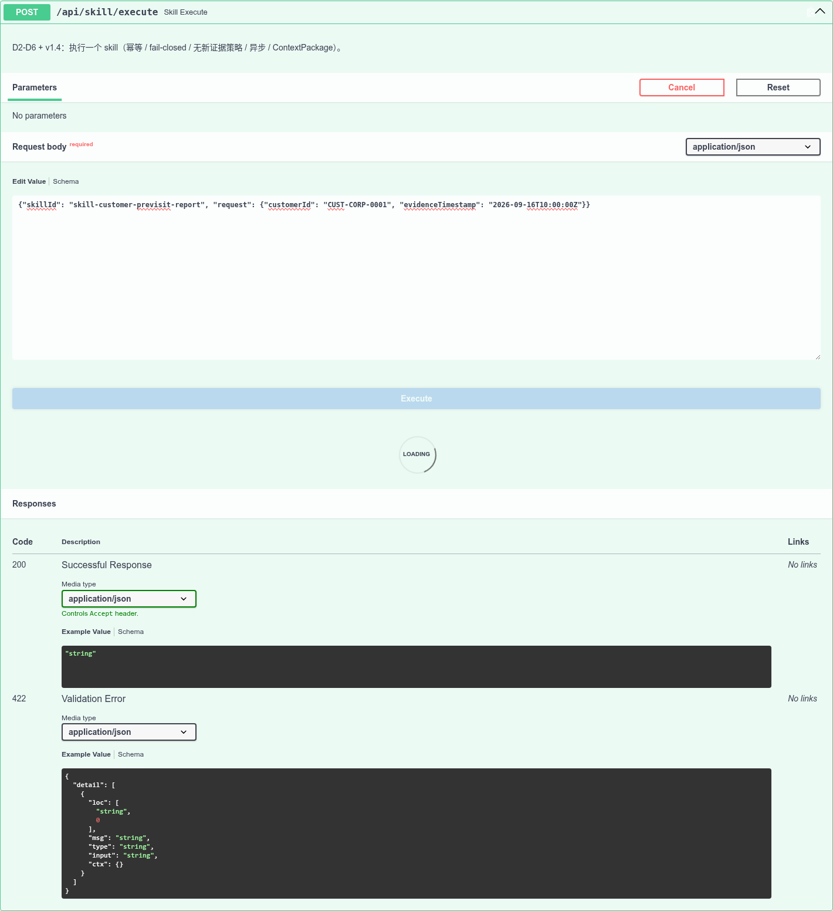
status=ok，含 reportTitle / executiveSummary / evidenceRefs / reportUrl。S05 · 控件门禁：无新证据 ⇒ 受控退出
同一个技能，人这次没给新证据。系统不是随便出结果，而是具名地不出。
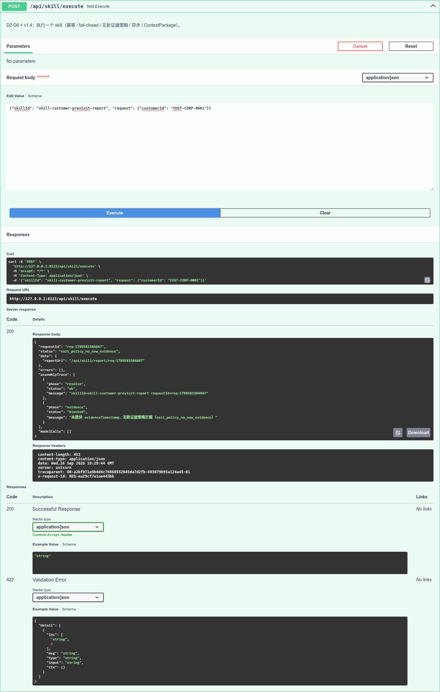
status=exit_policy_no_new_evidence，assemblyTrace 显示 evidence: blocked。⇒ "绿"必须来自真证据，而不是沉默。S06 · 受理与业务状态机
人把任务丢成异步作业，再回来看它走到哪一步。
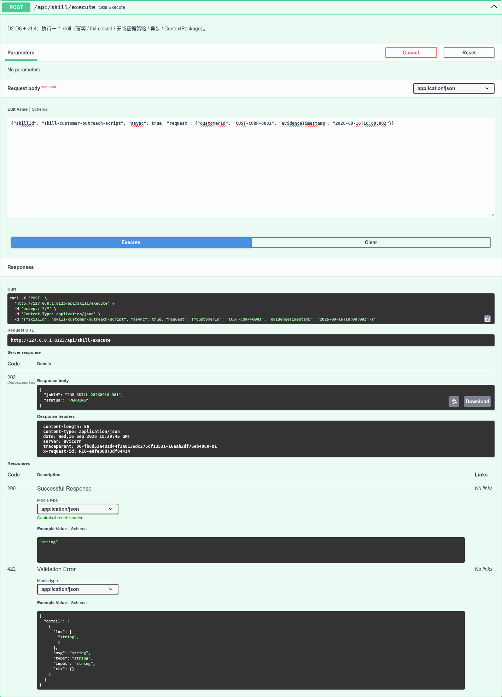
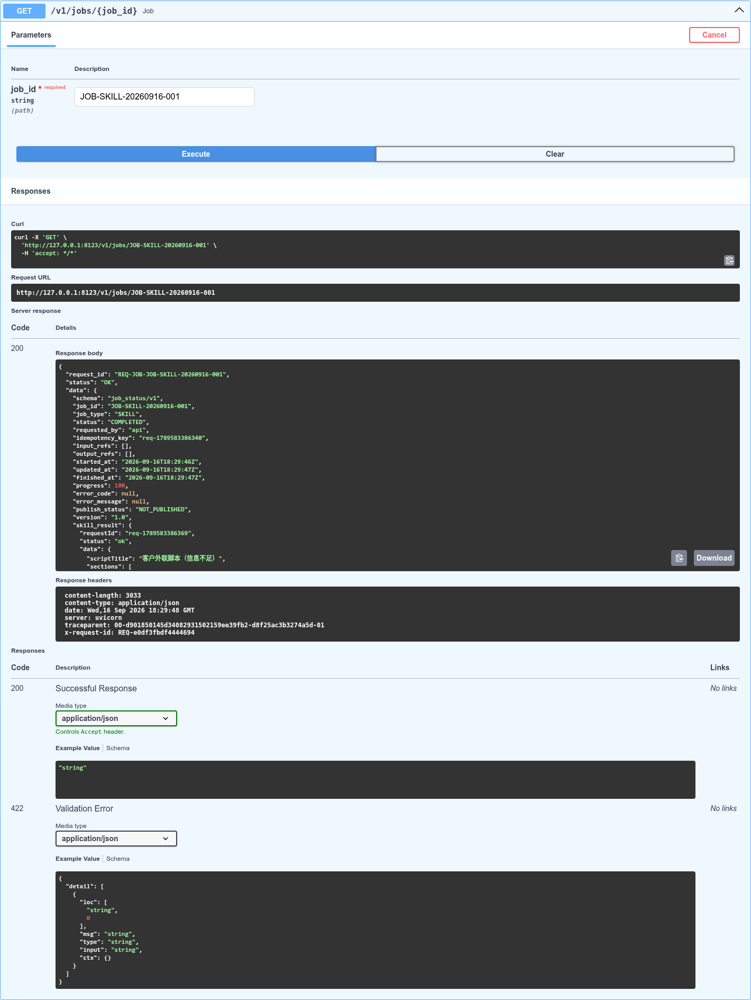
jobId + status=PENDING；查询端点返回 data.status（业务状态机取值域已在合同侧扩到 9 值，见 D-27）。S07 · 换到知识库（LightRAG WebUI）
人的第二个工作面：不是 KERT 的控制台，而是知识库。
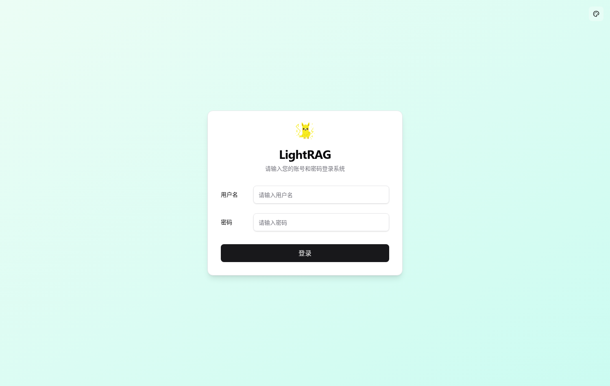
v1.5.7），与 KERT 是两个进程。S08 · 知识库里躺着 KERT 的物化产物
人打开文档列表：KERT 的本体物化产物已经被发布进知识库，正文开头就是 KERT 自己写的出处头（路径 + sha256）。
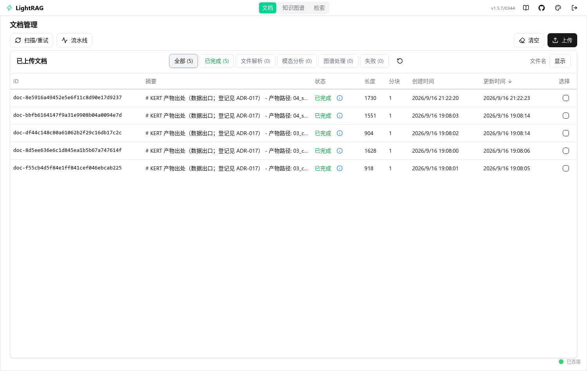
04_serve/product_knowledge/version=2026.09.16.1/ONTOLOGY.md 与 sha256: 9d2ebc4c… ⇒ "物化产物"与"知识库里的那条"是**同一件东西**。S09 · 自然语言提问 → 带出处的答案
人直接用大白话问客户画像与产品利率。系统给出答案，并把出处摊开；答不上来的部分明说答不上来。
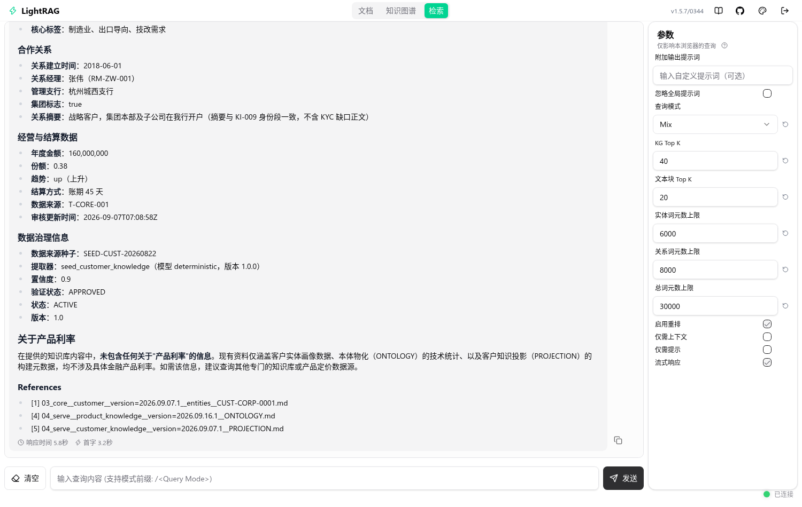
References 回指 KERT 产物路径 —— 03_core__customer__…CUST-CORP-0001.md、04_serve__product_knowledge__…__ONTOLOGY.md、04_serve__customer_knowledge__…__PROJECTION.md；并对"产品利率"明确声明知识库中没有该信息（不编造）。答案措辞由模型生成，判据取引用出处，不取措辞。S10 · 知识图谱
最后看整体：图谱里同时站着 KERT 的物化产物与本体概念。
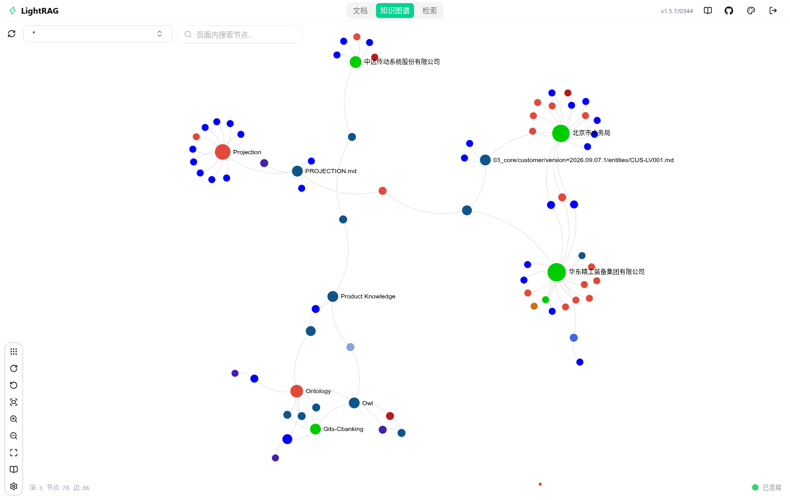
节点 78 / 边 86（与实例 graphml 计数一致，见 D-34 复核）；可视节点含 Projection、PROJECTION.md、Product Knowledge（KERT 产物侧）与 Ontology、Owl、Gits-Cbanking（本体侧）。这组图能证明什么、不能证明什么
能：人（用真浏览器）能在两个真实进程的界面上，把"地图→路由→本体→业务语义→知识库→物化产物"一路看到，且每一步都有可核字段。
不能：它不替代自动化断言 —— 六环的机械断言在 CI 上跑（tests/integration/test_six_ring_chain_end_to_end.py）；本组图是**可见面复核**，用于给人看"这东西真的转起来了"。
LightRAG 的答案文字依赖该实例的语料与 LLM 配置（本机 Ollama/DeepSeek），不具确定性；因此判据一律取"引用出处/字段值"，不取自然语言措辞。